Backpropagation
Efficient Gradient Computation in Neural Networks
Introduction
Neural Nets as Computation Graphs
Break computation into modular layers that can be chained together
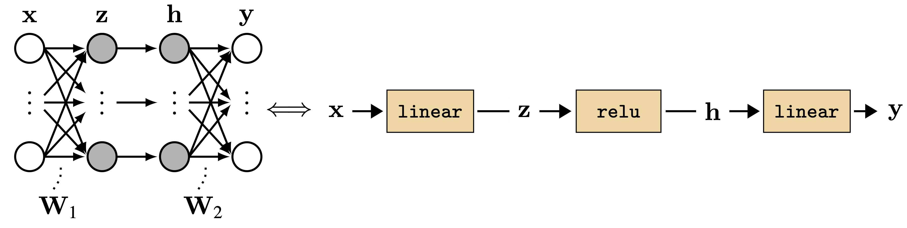
Each layer: forward pass transforms inputs → outputs
The Learning Problem
Given a layer with parameters \(\theta\), find values that minimize loss \(J\)
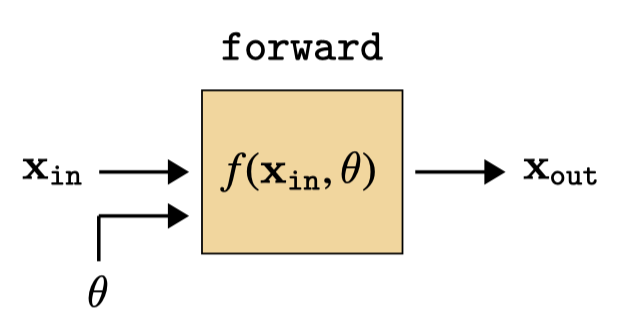
Question: How do we compute \(\frac{\partial J}{\partial \theta}\) for every parameter efficiently?
The Key Trick
Naive Approach: Compute Each Gradient Separately
For chain \(f_L \circ f_{L-1} \circ \cdots \circ f_1\) with parameters \(\theta_1, \theta_2, \ldots, \theta_L\):
\[\frac{\partial J}{\partial \theta_1} = \frac{\partial J}{\partial \mathbf{x}_L}\frac{\partial \mathbf{x}_L}{\partial \mathbf{x}_{L-1}} \cdots \frac{\partial \mathbf{x}_3}{\partial \mathbf{x}_2}\frac{\partial \mathbf{x}_2}{\mathbf{x}_1}\frac{\partial \mathbf{x}_1}{\partial \theta_1}\]
\[\frac{\partial J}{\partial \theta_2} = \frac{\partial J}{\partial \mathbf{x}_L}\frac{\partial \mathbf{x}_L}{\partial \mathbf{x}_{L-1}} \cdots \frac{\partial \mathbf{x}_3}{\partial \mathbf{x}_2}\frac{\partial \mathbf{x}_2}{\partial \theta_2}\]
Problem: Repeated computation! (All the gray terms are shared)
Backpropagation: Reuse Shared Terms
Compute shared terms once, reuse for all parameter gradients
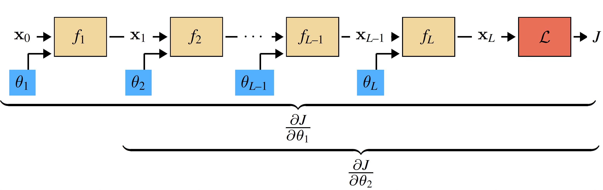
This is dynamic programming for gradient computation
The Backward Pass
Key Definitions
For any layer with input \(\mathbf{x}_{\texttt{in}}\), output \(\mathbf{x}_{\texttt{out}}\), parameters \(\theta\):
\[\mathbf{g}_l \triangleq \frac{\partial J}{\partial \mathbf{x}_l} \quad \text{(gradient of loss w.r.t. layer output)}\]
\[\mathbf{L}^{\mathbf{x}} \triangleq \frac{\partial \mathbf{x}_{\texttt{out}}}{\partial \mathbf{x}_{\texttt{in}}} \quad \mathbf{L}^{\theta} \triangleq \frac{\partial \mathbf{x}_{\texttt{out}}}{\partial \theta} \quad \text{(layer Jacobians)}\]
The Backward Operation
Two key equations for each layer:
\[\mathbf{g}_{\texttt{in}} = \mathbf{g}_{\texttt{out}}\mathbf{L}^{\mathbf{x}} \quad \text{(backprop errors)}\]
\[\frac{\partial J}{\partial \theta} = \mathbf{g}_{\texttt{out}}\mathbf{L}^{\theta} \quad \text{(parameter gradient)}\]
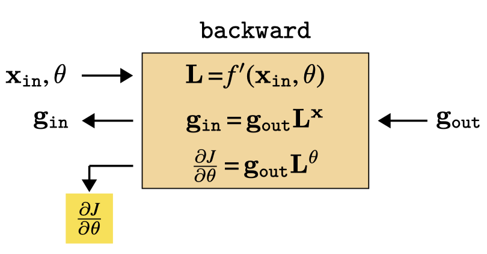
Generic Layer
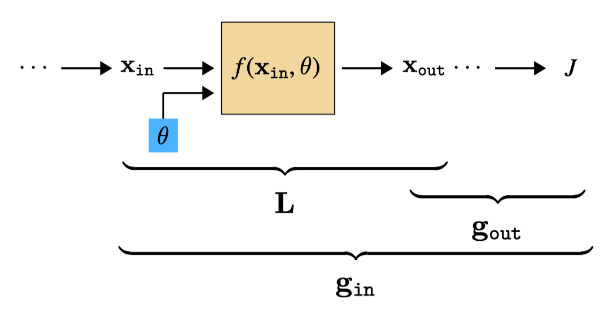
backward takes \((\mathbf{x}_{\texttt{in}}, \theta, \mathbf{g}_{\texttt{out}})\) → outputs \((\mathbf{g}_{\texttt{in}}, \frac{\partial J}{\partial \theta})\)
The Full Algorithm
Forward Pass
Compute all activations from input to loss
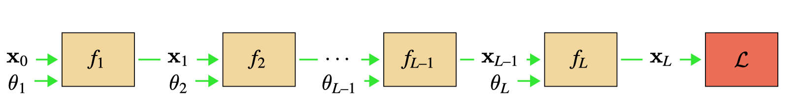
Store intermediate values needed for backward pass
Backward Pass
Compute gradients from loss back to inputs
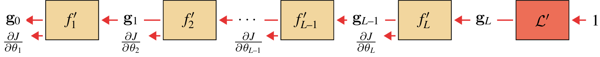
Complete Algorithm
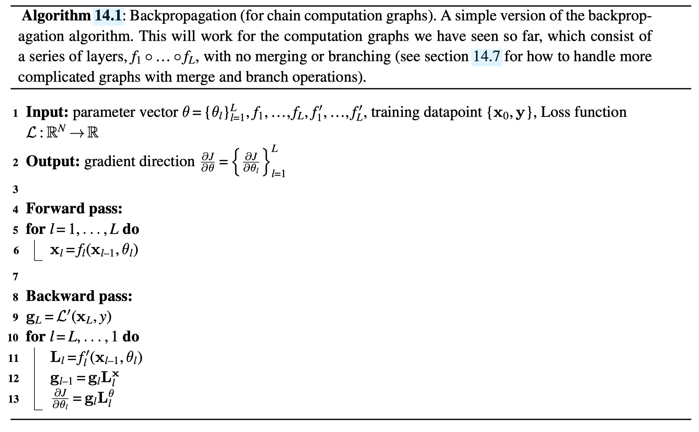
Example: MLP Layers
Linear Layer: Forward
\[\mathbf{x}_{\texttt{out}} = \mathbf{W}\mathbf{x}_{\texttt{in}} + \mathbf{b}\]
Jacobians: \[\mathbf{L}^{\mathbf{x}} = \mathbf{W} \quad \mathbf{L}^{\mathbf{b}} = \mathbf{I}\]
Linear Layer: Backward
Gradient propagation: \(\mathbf{g}_{\texttt{in}} = \mathbf{g}_{\texttt{out}}\mathbf{W}\)
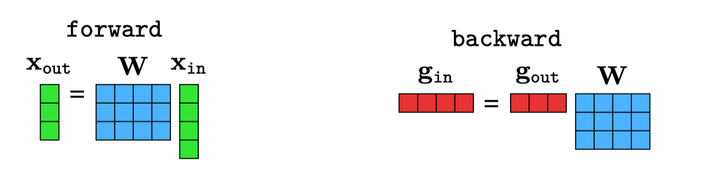
Linear Layer: Weight Gradient is an Outer Product
Parameter gradient: \(\frac{\partial J}{\partial \mathbf{W}} = \mathbf{x}_{\texttt{in}}\mathbf{g}_{\texttt{out}}\)
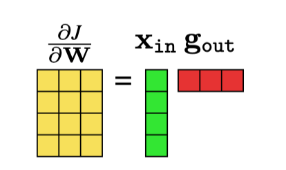
Outer product between input activations and output gradients
Linear Layer Complete
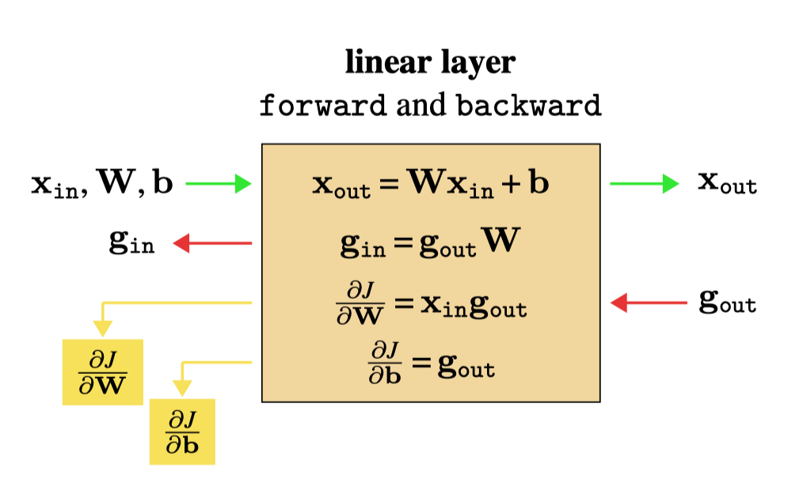
Simple matrix operations: forward ↔︎ backward symmetric (with transpose)
Pointwise Nonlinearity
For \(\mathbf{x}_{\texttt{out}}[i] = h(\mathbf{x}_{\texttt{in}}[i])\) (e.g., ReLU):
\[\mathbf{g}_{\texttt{in}}[i] = \mathbf{g}_{\texttt{out}}[i] \cdot h'(\mathbf{x}_{\texttt{in}}[i])\]
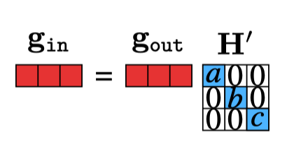
Element-wise multiplication with derivatives
Pointwise Layer Complete
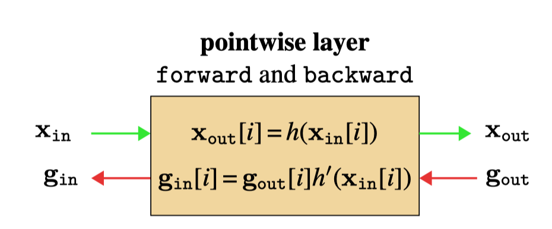
Loss Layer (L2)
\[J = \|\hat{\mathbf{y}} - \mathbf{y}\|^2_2\]
Backward: \(\mathbf{g}_{\texttt{in}} = 2(\hat{\mathbf{y}} - \mathbf{y})\)
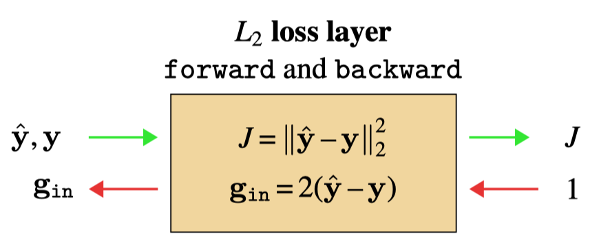
Error signal: difference between prediction and target
Putting It Together
Forward Through MLP
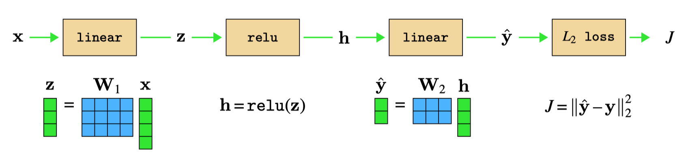
Backward Through MLP
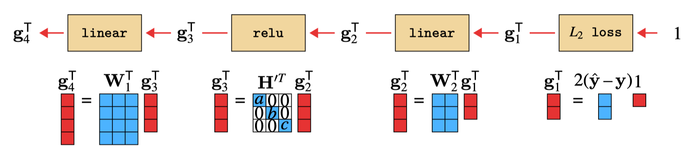
Linear layers: backward = forward with transposed weights!
Backprop As A Neural Network
Forward + Backward = one big computation graph

Backward pass is a hypernetwork parameterized by forward activations
Beyond Chains
Branch and Merge
For general computation graphs (DAGs), need two operations:
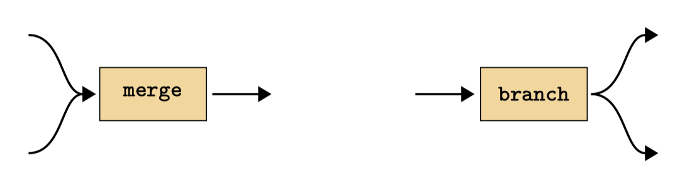
Branch: Copy variable → sum gradients | Merge: Concatenate → split gradients
Branch and Merge Complete
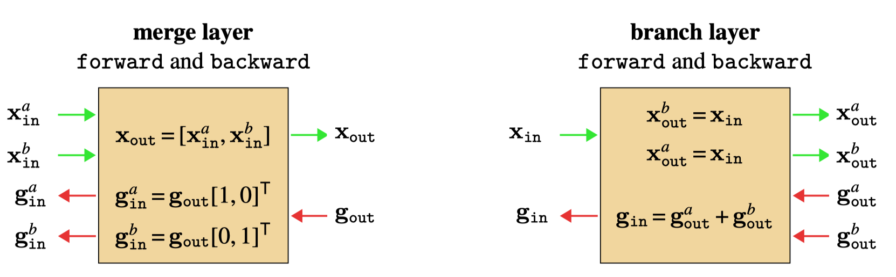
Example DAG
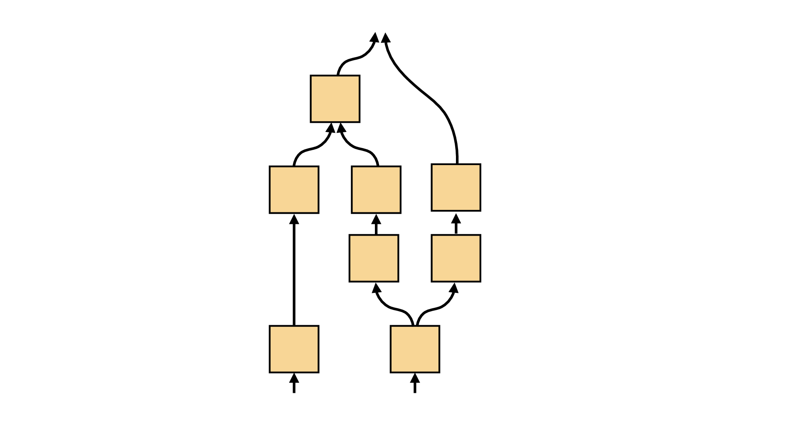
Can handle arbitrary directed acyclic graphs
Parameter Sharing
Shared parameters = branching in computation graph
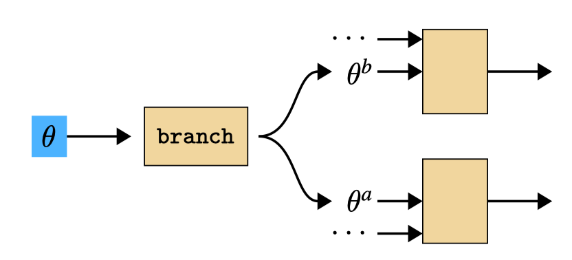
Gradients sum: \(\frac{\partial J}{\partial \theta} = \sum_i \frac{\partial J}{\partial \theta^i}\)
Applications
Backprop to the Data
Can optimize inputs not just parameters!
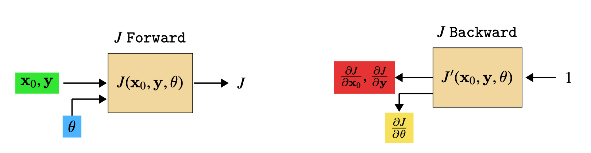
Data and parameters are symmetric in the computation graph
Example: Visualizing Features
Find input image that maximally activates a neuron
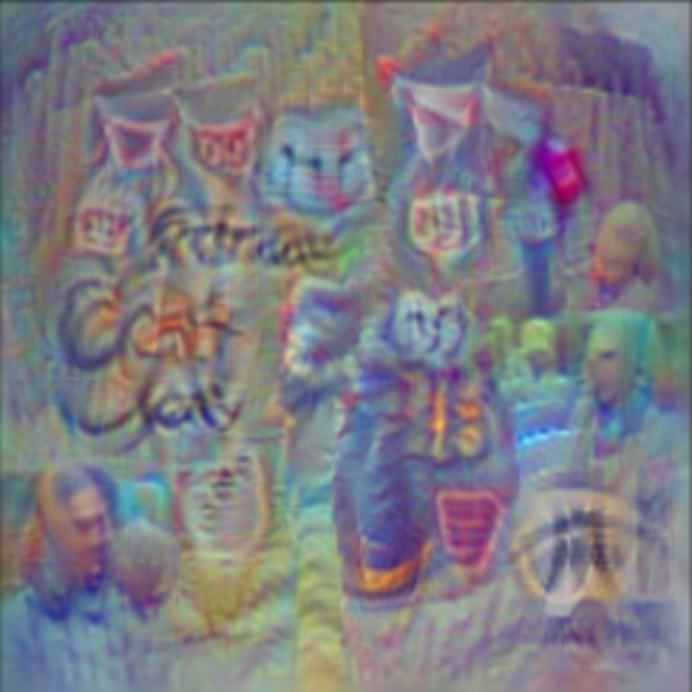
Optimize \(\mathbf{x}_0\) to minimize \(J = -x_l[i]\) (maximize activation)
Summary
- Backpropagation: Efficient gradient computation via dynamic programming
- Key idea: Reuse shared terms in chain rule
- Modular: Each layer defines
forwardandbackwardindependently - General: Works for any differentiable computation graph (DAGs)
- Applications: Parameter learning, data optimization, feature visualization